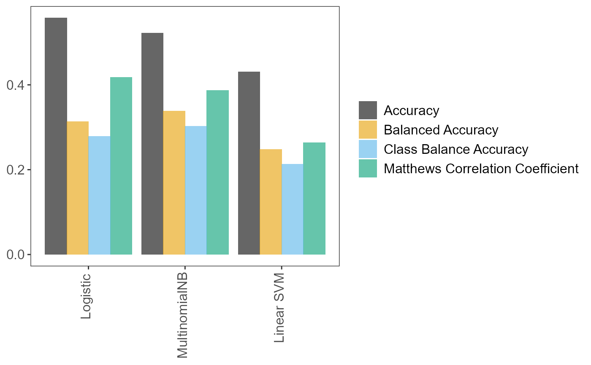

factory_model_performance_r.RdPerformance metrics on the test set.
factory_model_performance_r(pipe, x_train, y_train, x_test, y_test, metric)
| x_train | Data frame. Training data (predictor). |
|---|---|
| y_train | Vector. Training data (response). |
| x_test | Data frame. Test data (predictor). |
| y_test | Vector. Test data (response). |
| metric | String. Scorer that was used in pipeline tuning ("accuracy_score", "balanced_accuracy_score", "matthews_corrcoef", "class_balance_accuracy_score") |
A list of length 5:
pipe The fitted Scikit-learn/imblearn pipeline.
tuning_results Data frame. All (hyper)parameter values
and models tried during fitting.
pred Vector. The predictions on the test
set.
accuracy_per_class Data frame. Accuracies per class.
p_compare_models_bar A bar plot comparing the mean scores (of
the user-supplied metric parameter) from the cross-validation
on the training set, for the best (hyper)parameter values for
each learner.
Returned object tuning_results lists all (hyper)parameter values
tried during pipeline fitting, along with performance metrics. It is
generated from the Scikit-learn output that follows pipeline fitting.
It is derived from attribute cv_results_
with some modifications. In R, cv_results_ can be accessed following
fitting of a pipeline with pxtextmineR::factory_pipeline_r or by
calling function pxtextmineR::factory_model_performance_r. Say that
the fitted pipeline is assigned to an object called pipe, and that the
pipeline performance is assigned to an object called pipe_performance.
Then, cv_results_ can be accessed with pipe$cv_results_ or
pipe_performance$cv_results_.
NOTE: After calculating performance metrics on the test set,
pxtextmineR::factory_model_performance_r fits the pipeline on the
whole dataset (train + test). Hence, do not be surprised that the
pipeline's score() method will now return a dramatically improved score
on the test set- the refitted pipeline has now "seen" the test dataset
(see Examples). The re-fitted pipeline will perform much better on fresh
data than the pipeline fitted on x_train and y_train only.
Pedregosa F., Varoquaux G., Gramfort A., Michel V., Thirion B., Grisel O., Blondel M., Prettenhofer P., Weiss R., Dubourg V., Vanderplas J., Passos A., Cournapeau D., Brucher M., Perrot M. & Duchesnay E. (2011), Scikit-learn: Machine Learning in Python. Journal of Machine Learning Research 12:2825–-2830.
# Prepare training and test sets data_splits <- pxtextmineR::factory_data_load_and_split_r( filename = pxtextmineR::text_data, target = "label", predictor = "feedback", test_size = 0.90) # Make a small training set for a faster run in this example # Let's take a look at the returned list str(data_splits)#> List of 6 #> $ x_train :'data.frame': 1033 obs. of 1 variable: #> ..$ predictor: chr [1:1033] "Got well look after when I. Was down about what I have been in" "FantastIc care, couldn’t ask for better." "The care and information was excellent" "ConsIderIng the CovId19 emergency, the best possIble care was provIded." ... #> ..- attr(*, "pandas.index")=Int64Index([6660, 3189, 7525, 2929, 9316, 886, 8204, 1198, 9002, 5545, #> ... #> 8072, 3668, 8437, 2254, 8728, 7324, 4938, 953, 4234, 2060], #> dtype='int64', length=1033) #> $ x_test :'data.frame': 9301 obs. of 1 variable: #> ..$ predictor: chr [1:9301] "Staff communicated well and were caring. I got the treatment I needed and felt my concerns were listened to." "No" "Andrea & Nicky - great team. 2 staff better" "The staff members were very professional, caring and kind. Thank you so much both." ... #> ..- attr(*, "pandas.index")=Int64Index([7358, 8831, 1045, 5174, 5964, 6520, 3878, 2076, 5999, 222, #> ... #> 2347, 7879, 8005, 9148, 8, 2194, 6415, 820, 3829, 276], #> dtype='int64', length=9301) #> $ y_train : chr [1:1033(1d)] "Care received" "Care received" "Care received" "Care received" ... #> ..- attr(*, "dimnames")=List of 1 #> .. ..$ : chr [1:1033] "6660" "3189" "7525" "2929" ... #> $ y_test : chr [1:9301(1d)] "Communication" "Couldn't be improved" "Staff" "Staff" ... #> ..- attr(*, "dimnames")=List of 1 #> .. ..$ : chr [1:9301] "7358" "8831" "1045" "5174" ... #> $ index_training_data: int [1:1033] 6660 3189 7525 2929 9316 886 8204 1198 9002 5545 ... #> $ index_test_data : int [1:9301] 7358 8831 1045 5174 5964 6520 3878 2076 5999 222 ...# Fit the pipeline pipe <- pxtextmineR::factory_pipeline_r( x = data_splits$x_train, y = data_splits$y_train, tknz = "spacy", ordinal = FALSE, metric = "accuracy_score", cv = 2, n_iter = 10, n_jobs = 1, verbose = 3, learners = c("SGDClassifier", "MultinomialNB") ) # Assess model performance pipe_performance <- pxtextmineR::factory_model_performance_r( pipe = pipe, x_train = data_splits$x_train, y_train = data_splits$y_train, x_test = data_splits$x_test, y_test = data_splits$y_test, metric = "accuracy_score") names(pipe_performance)#> [1] "pipe" "tuning_results" "pred" #> [4] "accuracy_per_class" "p_compare_models_bar"# Let's compare pipeline performance for different tunings with a range of # metrics averaging the cross-validation metrics for each fold. pipe_performance$ tuning_results %>% dplyr::select(learner, dplyr::contains("mean_test"))#> learner mean_test_Accuracy mean_test_Balanced Accuracy #> 9 SGDClassifier 0.5982487 0.3967683 #> 2 SGDClassifier 0.5750097 0.3707536 #> 6 MultinomialNB 0.5517764 0.3397358 #> 0 MultinomialNB 0.5207893 0.3697398 #> 4 SGDClassifier 0.4936856 0.2623932 #> 1 SGDClassifier 0.4820783 0.2995064 #> 3 SGDClassifier 0.4743320 0.2687008 #> 5 SGDClassifier 0.4685256 0.3130831 #> 7 SGDClassifier 0.4375084 0.2388893 #> 8 SGDClassifier 0.4123709 0.2071249 #> mean_test_Matthews Correlation Coefficient mean_test_Class Balance Accuracy #> 9 0.4805353 0.3702990 #> 2 0.4465579 0.3234072 #> 6 0.4115291 0.2894721 #> 0 0.3910399 0.2983823 #> 4 0.3347877 0.2133870 #> 1 0.3350750 0.2566720 #> 3 0.3172119 0.2339406 #> 5 0.3312896 0.2674523 #> 7 0.2783651 0.1879982 #> 8 0.2308266 0.1546846# A glance at the (hyper)parameters and their tuned values pipe_performance$ tuning_results %>% dplyr::select(learner, dplyr::contains("param_")) %>% str()#> 'data.frame': 10 obs. of 22 variables: #> $ learner : chr "SGDClassifier" "SGDClassifier" "MultinomialNB" "MultinomialNB" ... #> $ param_sampling__kw_args : chr "{'up_balancing_counts': 300}" "{'up_balancing_counts': 800}" "{'up_balancing_counts': 300}" "{'up_balancing_counts': 800}" ... #> $ param_preprocessor__texttr__text__transformer__use_idf :List of 10 #> ..$ : logi FALSE #> ..$ : logi FALSE #> ..$ : logi FALSE #> ..$ : logi FALSE #> ..$ : logi FALSE #> ..$ : logi FALSE #> ..$ : logi FALSE #> ..$ : logi FALSE #> ..$ : logi TRUE #> ..$ : logi FALSE #> $ param_preprocessor__texttr__text__transformer__tokenizer : chr "<pxtextmining.helpers.tokenization.LemmaTokenizer object at 0x00000000B273DE50>" "<pxtextmining.helpers.tokenization.LemmaTokenizer object at 0x00000000B273DE50>" "<pxtextmining.helpers.tokenization.LemmaTokenizer object at 0x00000000B273DF10>" "<pxtextmining.helpers.tokenization.LemmaTokenizer object at 0x00000000B273DF10>" ... #> $ param_preprocessor__texttr__text__transformer__preprocessor: chr "<function text_preprocessor at 0x00000000645663A0>" "<function text_preprocessor at 0x00000000645663A0>" "<function text_preprocessor at 0x00000000645663A0>" "<function text_preprocessor at 0x00000000645663A0>" ... #> $ param_preprocessor__texttr__text__transformer__norm : chr "l2" "None" "None" "None" ... #> $ param_preprocessor__texttr__text__transformer__ngram_range : chr "(1, 3)" "(1, 3)" "(1, 3)" "(1, 3)" ... #> $ param_preprocessor__texttr__text__transformer__min_df :List of 10 #> ..$ : int 3 #> ..$ : int 3 #> ..$ : int 3 #> ..$ : int 3 #> ..$ : int 1 #> ..$ : int 1 #> ..$ : int 1 #> ..$ : int 1 #> ..$ : int 1 #> ..$ : int 3 #> $ param_preprocessor__texttr__text__transformer__max_df :List of 10 #> ..$ : num 0.95 #> ..$ : num 0.95 #> ..$ : num 0.95 #> ..$ : num 0.95 #> ..$ : num 0.95 #> ..$ : num 0.95 #> ..$ : num 0.95 #> ..$ : num 0.7 #> ..$ : num 0.95 #> ..$ : num 0.7 #> $ param_preprocessor__texttr__text__transformer : chr "TfidfVectorizer(max_df=0.95, min_df=3, ngram_range=(1, 3),\n preprocessor=<function text_preproc"| __truncated__ "TfidfVectorizer(max_df=0.95, min_df=3, ngram_range=(1, 3),\n preprocessor=<function text_preproc"| __truncated__ "TfidfVectorizer()" "TfidfVectorizer()" ... #> $ param_preprocessor__sentimenttr__scaler__scaler__n_bins :List of 10 #> ..$ : int 4 #> ..$ : int 4 #> ..$ : int 4 #> ..$ : int 8 #> ..$ : int 8 #> ..$ : int 4 #> ..$ : int 8 #> ..$ : int 4 #> ..$ : int 4 #> ..$ : int 4 #> $ param_preprocessor__sentimenttr__scaler__scaler : chr "KBinsDiscretizer(n_bins=4, strategy='kmeans')" "KBinsDiscretizer(n_bins=4, strategy='kmeans')" "KBinsDiscretizer(strategy='kmeans')" "KBinsDiscretizer(strategy='kmeans')" ... #> $ param_preprocessor__lengthtr__scaler__scaler : chr "KBinsDiscretizer(n_bins=3, strategy='kmeans')" "KBinsDiscretizer(n_bins=3, strategy='kmeans')" "KBinsDiscretizer(n_bins=3, strategy='kmeans')" "KBinsDiscretizer(n_bins=3, strategy='kmeans')" ... #> $ param_featsel__selector__score_func : chr "<function chi2 at 0x000000006454E4C0>" "<function chi2 at 0x000000006454E4C0>" "<function chi2 at 0x000000006454E4C0>" "<function chi2 at 0x000000006454E4C0>" ... #> $ param_featsel__selector__percentile :List of 10 #> ..$ : int 85 #> ..$ : int 100 #> ..$ : int 85 #> ..$ : int 100 #> ..$ : int 85 #> ..$ : int 100 #> ..$ : int 70 #> ..$ : int 70 #> ..$ : int 70 #> ..$ : int 70 #> $ param_featsel__selector : chr "SelectPercentile(percentile=85,\n score_func=<function chi2 at 0x000000006454E4C0>)" "SelectPercentile(percentile=85,\n score_func=<function chi2 at 0x000000006454E4C0>)" "SelectPercentile(percentile=85,\n score_func=<function chi2 at 0x000000006454E4C0>)" "SelectPercentile(percentile=85,\n score_func=<function chi2 at 0x000000006454E4C0>)" ... #> $ param_clf__estimator__alpha :List of 10 #> ..$ : num NaN #> ..$ : num NaN #> ..$ : num 0.5 #> ..$ : int 1 #> ..$ : num NaN #> ..$ : num NaN #> ..$ : num NaN #> ..$ : num NaN #> ..$ : num NaN #> ..$ : num NaN #> $ param_clf__estimator : chr "SGDClassifier(loss='log', max_iter=10000)" "SGDClassifier(loss='log', max_iter=10000)" "MultinomialNB()" "MultinomialNB()" ... #> $ param_clf__estimator__penalty :List of 10 #> ..$ : chr "l2" #> ..$ : chr "l2" #> ..$ : num NaN #> ..$ : num NaN #> ..$ : chr "l2" #> ..$ : chr "l2" #> ..$ : chr "l2" #> ..$ : chr "l2" #> ..$ : chr "l2" #> ..$ : chr "l2" #> $ param_clf__estimator__max_iter :List of 10 #> ..$ : int 10000 #> ..$ : int 10000 #> ..$ : num NaN #> ..$ : num NaN #> ..$ : int 10000 #> ..$ : int 10000 #> ..$ : int 10000 #> ..$ : int 10000 #> ..$ : int 10000 #> ..$ : int 10000 #> $ param_clf__estimator__loss :List of 10 #> ..$ : chr "log" #> ..$ : chr "hinge" #> ..$ : num NaN #> ..$ : num NaN #> ..$ : chr "log" #> ..$ : chr "log" #> ..$ : chr "log" #> ..$ : chr "log" #> ..$ : chr "hinge" #> ..$ : chr "hinge" #> $ param_clf__estimator__class_weight :List of 10 #> ..$ : NULL #> ..$ : NULL #> ..$ : num NaN #> ..$ : num NaN #> ..$ : NULL #> ..$ : chr "balanced" #> ..$ : chr "balanced" #> ..$ : NULL #> ..$ : chr "balanced" #> ..$ : NULL #> - attr(*, "pandas.index")=Int64Index([9, 2, 6, 0, 4, 1, 3, 5, 7, 8], dtype='int64')# Accuracy per class pipe_performance$accuracy_per_class#> class counts accuracy #> 1 Access 370 0.25405405 #> 2 Care received 3027 0.69805088 #> 3 Communication 786 0.20356234 #> 4 Couldn't be improved 1533 0.77429876 #> 5 Dignity 128 0.05468750 #> 6 Environment/ facilities 449 0.39866370 #> 7 Miscellaneous 318 0.47169811 #> 8 Staff 2560 0.68867188 #> 9 Transition/coordination 130 0.07692308# Learner performance barplot pipe_performance$p_compare_models_bar#> [1] "Staff" "Miscellaneous" "Staff" #> [4] "Staff" "Couldn't be improved" "Care received"################################################################################ # NOTE!!! # ################################################################################ # After calculating performance metrics on the test set, # pxtextmineR::factory_model_performance_r fits the pipeline on the WHOLE # dataset (train + test). Hence, do not be surprised that the pipeline's # score() method will now return a dramatically improved score on the test # set- the refitted pipeline has now "seen" the test dataset. pipe_performance$pipe$score(data_splits$x_test, data_splits$y_test)#> [1] 0.7462638pipe$score(data_splits$x_test, data_splits$y_test)#> [1] 0.7462638# We can confirm this score by having the re-fitted pipeline predict x_test # again. The predictions will be better and the new accuracy score will be # the inflated one. preds_refitted <- pipe$predict(data_splits$x_test) score_refitted <- data_splits$y_test %>% data.frame() %>% dplyr::rename(true = '.') %>% dplyr::mutate( pred = preds_refitted, check = true == preds_refitted, check = sum(check) / nrow(.) ) %>% dplyr::pull(check) %>% unique() score_refitted#> [1] 0.7462638# Compare this to the ACTUAL performance on the test dataset preds_actual <- pipe_performance$pred score_actual <- data_splits$y_test %>% data.frame() %>% dplyr::rename(true = '.') %>% dplyr::mutate( pred = preds_actual, check = true == preds_actual, check = sum(check) / nrow(.) ) %>% dplyr::pull(check) %>% unique() score_actual#> [1] 0.6088593score_refitted - score_actual#> [1] 0.1374046